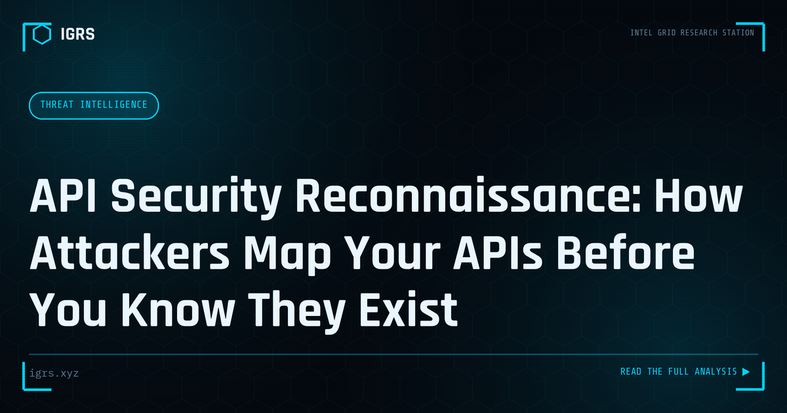

API Security Reconnaissance: How Attackers Map Your APIs Before You Know They Exist
| File No. | IGRS-035/2026 |
| Subject | OSINT techniques for API discovery and security assessment in authorized environments |
| Category | Threat Intelligence |
| Author | Manuj Kumar Pandey |
| Published | 2026-06-03 |
| Reading time | 12 minutes |
Most organizations do not have complete inventories of their own APIs. Attackers find what defenders miss. The discovery techniques and how to get ahead of them.
API Security: The Expanding Attack Surface
Application Programming Interfaces (APIs) power the modern digital world — mobile apps, web services, and integrations all rely on them. But this ubiquity has made APIs a primary target for attackers, and OSINT reconnaissance is often the first step in API attacks. Understanding how attackers discover and exploit APIs, and how to defend them, is essential. This guide covers API security from the reconnaissance perspective.
Why APIs Are Attractive Targets
APIs often expose sensitive functionality and data directly, sometimes with weaker security than user-facing applications. They may lack the scrutiny applied to websites, expose business logic, and provide programmatic access that attackers can automate. As organisations expose more functionality through APIs, the attack surface grows correspondingly, making API security a critical concern.
How Attackers Discover APIs Through OSINT
| Method | What It Finds |
|---|---|
| Google dorking | API documentation, endpoints, keys |
| GitHub searches | Hardcoded API keys, endpoints |
| Mobile app analysis | API endpoints in app code |
| JavaScript analysis | API calls in front-end code |
| Shodan/Censys | Exposed API servers |
The GitHub Key Leak Problem
One of the most common API security failures is leaked credentials in public code repositories. Developers accidentally commit API keys, tokens, and secrets to GitHub, where attackers actively search for them. A single leaked key can grant access to sensitive data or services. GitHub searches for patterns like "api_key" alongside a company name frequently reveal exposed credentials — a reconnaissance technique that requires no sophistication but yields serious findings.
Mobile App API Discovery
Mobile applications communicate with backend APIs, and reverse-engineering an app reveals these endpoints. Attackers decompile APKs, inspect network traffic, and analyse app code to map the API surface. Endpoints intended only for the app become accessible for direct attack. This is why APIs must enforce security independently rather than relying on the app as a gatekeeper.
The OWASP API Security Top 10
The OWASP API Security Top 10 catalogues the most critical API vulnerabilities:
- Broken Object Level Authorization (BOLA) — accessing other users' data by changing IDs
- Broken Authentication — weak or flawed authentication
- Excessive Data Exposure — returning more data than needed
- Lack of Rate Limiting — enabling abuse and brute force
- Broken Function Level Authorization — accessing unauthorised functions
- Mass Assignment — modifying unintended object properties
BOLA: The Most Common API Flaw
Broken Object Level Authorization is the most prevalent API vulnerability. It occurs when an API fails to verify that the requesting user is authorised to access the specific object requested. An attacker simply changes an ID in the request — for example, from their own account number to another's — and accesses data that should be off-limits. Preventing BOLA requires authorisation checks on every object access, validated server-side.
API Reconnaissance Tools
| Tool | Purpose |
|---|---|
| Postman | API testing and exploration |
| Burp Suite | Intercepting and manipulating API calls |
| Kiterunner | API endpoint discovery |
| GitHub search | Leaked keys and endpoints |
| Swagger/OpenAPI files | API documentation discovery |
GraphQL-Specific Risks
GraphQL APIs introduce distinct risks. Introspection queries can reveal the entire API schema, exposing all available operations. Overly permissive queries enable data harvesting, and nested queries can cause denial of service. Investigating GraphQL endpoints involves checking whether introspection is enabled and analysing the schema for sensitive operations. Disabling introspection in production and implementing query depth limiting are key defences.
Defending APIs
Protecting APIs requires layered measures: removing all credentials from client-side code, rotating any exposed keys immediately, implementing strong authentication and authorisation checked server-side on every request, enforcing rate limiting, using API gateways, maintaining an accurate API inventory, and monitoring GitHub for leaked keys. Treating the API as the security boundary — never trusting the client — is the fundamental principle.
API Inventory and Shadow APIs
A frequently overlooked risk is shadow and zombie APIs — undocumented or forgotten endpoints that remain accessible but unmonitored. These often lack current security controls and become easy targets. Maintaining a complete, current API inventory, and decommissioning unused endpoints, eliminates this hidden attack surface. For organisations, knowing exactly what APIs exist is the prerequisite to securing them.
Building API Security Capability
Effective API security combines understanding how attackers discover and exploit APIs, applying the OWASP API Security Top 10, securing the development lifecycle, and continuous testing. For security professionals and investigators in India, recognising that API reconnaissance via OSINT — GitHub leaks, mobile app analysis, exposed documentation — is often the attacker's starting point enables proactive defence. Securing APIs at the source, with server-side authorisation and credential hygiene, protects the data and functionality that increasingly flows through them.